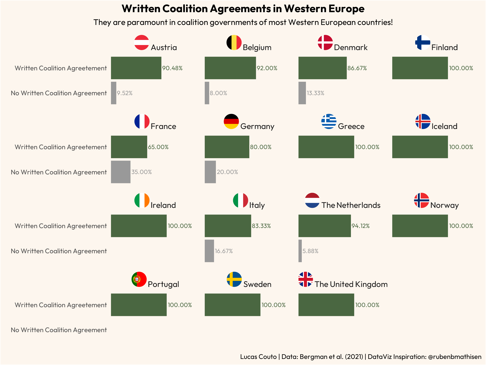

#before you proceed, you should download the data from: https://repdem.org/index.php/coalition-governments-in-western-europe/
library(ggplot2) #for data visualisation
library(ggtext) #for markdown
library(ragg) #for saving data viz in png
library(readxl) #for reading xlsx files
library(showtext) #for displaying fonts in data viz
library(tidyverse) #for data-wrangling
#data-wrangling--
coal_agree <- read_xlsx("Data-set-with-party-strings-Excel.xlsx")
coal1 <- coal_agree %>%
filter(cab_coalition == 1) %>%
group_by(country_id, coal_agree_public) %>%
select(cab_id) %>%
summarise(n = n()) %>%
mutate(full_name = case_when(country_id == 1 ~ "Austria",
country_id == 2 ~ "Belgium",
country_id == 3 ~ "Denmark",
country_id == 4 ~ "Finland",
country_id == 5 ~ "France",
country_id == 6 ~ "Germany",
country_id == 7 ~ "Greece",
country_id == 8 ~ "Iceland",
country_id == 9 ~ "Ireland",
country_id == 10 ~ "Italy",
country_id == 12 ~ "The Netherlands",
country_id == 13 ~ "Norway",
country_id == 14 ~ "Portugal",
country_id == 15 ~ "Spain",
country_id == 16 ~ "Sweden",
country_id == 17 ~ "The United Kingdom")) %>%
drop_na() %>%
ungroup() %>%
group_by(full_name) %>%
mutate(total = sum(n),
share = n/total) %>%
ungroup() %>%
select(full_name, coal_agree_public, share) %>%
mutate(full_name = case_when(full_name == "Austria" ~ "<img src='https://cdn.countryflags.com/thumbs/austria/flag-round-250.png' width='18'/> Austria",
full_name == "Belgium" ~ "<img src='https://cdn.countryflags.com/thumbs/belgium/flag-round-250.png' width='18'/> Belgium",
full_name == "Denmark" ~ "<img src='https://cdn.countryflags.com/thumbs/denmark/flag-round-250.png' width='18'/> Denmark",
full_name == "Finland" ~ "<img src='https://cdn.countryflags.com/thumbs/finland/flag-round-250.png' width='18'/> Finland",
full_name == "France" ~ "<img src='https://cdn.countryflags.com/thumbs/france/flag-round-250.png' width='18'/> France",
full_name == "Germany" ~ "<img src='https://cdn.countryflags.com/thumbs/germany/flag-round-250.png' width='18'/> Germany",
full_name == "Greece" ~ "<img src='https://cdn.countryflags.com/thumbs/greece/flag-round-250.png' width='18'/> Greece",
full_name == "Iceland" ~ "<img src='https://cdn.countryflags.com/thumbs/iceland/flag-round-250.png' width='18'/> Iceland",
full_name == "Ireland" ~ "<img src='https://cdn.countryflags.com/thumbs/ireland/flag-round-250.png' width='18'/> Ireland",
full_name == "Italy" ~ "<img src='https://cdn.countryflags.com/thumbs/italy/flag-round-250.png' width='18'/> Italy",
full_name == "The Netherlands" ~ "<img src='https://cdn.countryflags.com/thumbs/netherlands/flag-round-250.png' width='18'/> The Netherlands",
full_name == "Norway" ~ "<img src='https://cdn.countryflags.com/thumbs/norway/flag-round-250.png' width='18'/> Norway",
full_name == "Portugal" ~ "<img src='https://cdn.countryflags.com/thumbs/portugal/flag-round-250.png' width='18'/> Portugal",
full_name == "Spain" ~ "<img src='https://cdn.countryflags.com/thumbs/spain/flag-round-250.png' width='18'/> Spain",
full_name == "Sweden" ~ "<img src='https://cdn.countryflags.com/thumbs/sweden/flag-round-250.png' width='18'/> Sweden",
full_name == "The United Kingdom" ~ "<img src='https://cdn.countryflags.com/thumbs/united-kingdom/flag-round-250.png' width='18'/> The United Kingdom"))
#fonts-
font_add(family = "regular", "Outfit-Regular.ttf")
font_add(family = "bold", "Outfit-Bold.ttf")
showtext_auto()
#plot---
coal1 %>% ggplot(aes(as.factor(coal_agree_public), share, fill = as.factor(coal_agree_public))) +
geom_bar(stat = "identity", width = 0.9) +
geom_text(aes(x = as.factor(coal_agree_public), y = share, fontface = 2, label = scales::percent(share, accuracy = 0.01),
colour = as.factor(coal_agree_public)), position = position_dodge(width = 1), hjust = -0.05, size = 8, family="regular") +
scale_x_discrete(labels = c("0" = "No Written Coalition Agreement",
"1" = "Written Coalition Agreetement")) +
scale_y_continuous(limits = c(0.0, 1.6)) +
scale_fill_manual(values=c("#999999", "#4a6741")) + scale_colour_manual(values=c("#999999", "#4a6741")) +
facet_wrap(~full_name) +
coord_flip(expand=FALSE) +
labs(title = "Written Coalition Agreements in Western Europe",
subtitle = "They are paramount in coalition governments of most Western European countries!",
x = "",
y = "",
caption = "Lucas Couto | Data: Bergman et al. (2021) | DataViz Inspiration: @rubenbmathisen") +
theme(
#Title, Subtitle, Caption
plot.title = element_text(family="bold", size=40, hjust=0.5, vjust=1),
plot.subtitle = element_text(family="regular", size=30, hjust=0.5, vjust=1),
plot.caption = element_text(family="regular", size=25, hjust=1, vjust=1),
plot.title.position = "plot",
plot.caption.position = "plot",
#Panel and Background
panel.border=element_blank(),
panel.grid.major = element_blank(),
panel.grid.minor = element_blank(),
panel.background = element_rect(fill = "#fdf6ee"),
plot.background = element_rect(fill = "#fdf6ee"),
#Axes
#axis.ticks.length=unit(0.15, "cm"),
axis.ticks = element_blank(),
axis.line = element_blank(),
#axis.title = element_text(size=45, family="regular", color="white"),
axis.text.x = element_blank(),
axis.text.y = element_text(size=25, family="regular"),
#Strip
strip.background = element_rect(fill = "#fdf6ee"),
strip.text = element_markdown(size=30, family="regular", hjust=0.5, vjust=1.5),
#Legend
legend.position = "none"
) -> pwcoalagree
#ggsave("pwcoalagree.png",
# plot=pwcoalagree,
# device = agg_png(width = 8, height = 6, units = "in", res = 300))First Ever Blog Post! Visualising Written Coalition Agreements in Western Europe
Data Visualization
Coalition Agreements
Western Europe
In this post, I discuss some of my plans for 2024 and share my first DataViz of the year!
Welcome to my first post ever!
Well, I created this site at the beginning of the last year. Since then, I’ve been mostly concerned with adjusting minor details, such as setting up my research page. As a result, I have not paid enough attention to my Blog section… until now! Bluntly speaking, my main reason for finally getting my hands dirty with it is because of my resolutions for this year. Honestly, I probably would not do it otherwise.
Even though I have pretty difficult resolutions for this year, such as dramatically reducing the amount of Coca-Cola I drink daily, I still have others which are way more realistic. One of them is making at least one DataViz per month this year, so why not make the best of it and get started with my Blog?
My interest in DataViz
If this is the first time you hear about me, I think some introduction is in order. Well, I do not have much to say, but I’m a Brazilian Political Scientist who holds an MSc degree (in pol sci) from the University of Brasília. As for my hobbies, I would list mainly watching sports, especially football and tennis, and watching something on TV. For whatever reason, maybe because I was part of the Observatório do Congresso, an extension activity of the Institute of Political Science at the University of Brasília, I’ve developed a deep interest in Data Visualisation, which could be roughly translated to ‘yeah, I think it would be cool to make some pretty graphs’.
Over the years, my interest in DataViz has led me to get better and better with R, albeit with the caveat that we never actually stop learning and that there’s so much I still do not know. In my opinion, the most amusing aspect of this process is how much I’ve learnt from the community itself. This site, for example, is a direct consequence of mixing lessons from Andrew Heiss, Bea Milz, and Albert Rapp. Even if I have never exchanged a single word with them, they have helped me tremendously in a variety of ways.
The same rings true when it comes to DataViz! Actually, most of what I know comes from accompanying the beautiful graphs made for Tidy Tuesday, a project in which the community makes a graphical representation of something based on a public dataset for each week. Even if it is impossible to namely cite all those from whom I’ve learnt something, I’d like to compliment especially Moriah Taylor’s work. Once again, she probably doesn’t even know who I am. Even still, 85% of everything I know about DataViz comes from her.
My only problem with TidyTuesday is that I’d rather dedicate my time to something I really love, namely politics, sports, or some random nerdy stuff. For this reason, I have my own Series. Its aim is to make me learn something new in the realm of data visualisation while I use a dataset on something related to Political Science. Sometimes, I also make visualisations about sports or some geek stuff. However, I reserve those for my social media, as I do not think someone interested in my work would search for those things on my site. In any case, for this series, I usually proceed as follows: I see a visualisation I like (most of the time from someone participating in TidyTuesday), and I try to replicate it with minor modifications to my liking. Now that I’m done talking, let’s get to today’s graph.
Coalition Agreements in Western Europe
Recently, I’ve been reading about coalition agreements. If you live in any Western European country, it’s pretty likely, as we’ll see below, that you know what I’m talking about. To those who don’t know what they are, they are basically public documents onto which governing parties put down the policies that they wish to implement/pursue while they are in office. If you want to get to know more about them, I strongly suggest you read Eichorst (2014), Moury (2011), Moury (2013), and Timmermans (2006). As this literature suggests, coalition agreements do matter for what happens in the period of coalition governance. To exemplify this, Bergman et al. (2024) find that coalition agreements are tied to heightened policy-making productivity.
In any case, the central point to me is that not all democracies have coalition governments with the habit of disclosing written coalition agreements. To the best of my knowledge, there are only a few instances of written coalition agreements in presidential democracies, for example. Thus, my aim with the below graphical representation from a PolSci perspective is to see to what extent coalition governments put down the terms of the multiparty deal in Western Europe. I also bear in mind that, while there are several beautiful visualisations about research topics within PolSci, such as Andrew Heiss’ graphs on NGOs and Ruben Mathisen’s graphs on inequality, there are very few exemplars of graphs related to coalition politics in social media.
With an eye on DataViz, I want to use the colour background that Ruben Mathisen uses in his graphs. Moreover, as I’ve seen that Outfit is the most used font by Georgios Karamanis in his submissions to TidyTuesday in the last two years, I wanted to give it a try. Given how consistently he’s been using it, it’s pretty likely that the font is pleasing to the eye.
So, here we go:

As it seems, written coalition agreements are common instruments for coalition governments in the region. Putting France aside, all other Western European countries witness the writing of multiparty agreements on at least a 4:1 ratio. However, these numbers are a bit misleading, as we should have to consider the number of coalition governments per country as well. To illustrate this, let’s consider the percentage for the UK. Despite boasting a percentage of 100%, the number of coalition governments there equals to one (Cameron I). Hence, it would be a bit of a stretch to say that the UK is very familiar with coalition agreements since they have not even had enough multiparty governments in the first place.
Either way, for present purposes, I’m pretty pleased with what we’ve got. The background of the plot is pretty, the font fits well, and we’ve got a plot about coalition governments in hands. All in all, a good start to my journey of making at least one graph a month this year.
See you next month!